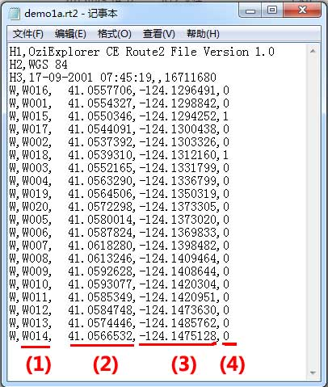

|
| 首页 | GeoTIFF | 今日花园Maps | OruxMaps | OZI | 资源 | 软件 | 联系 |
| 当前位置：OZI ---> OZI for Android1.15版中添加线路的方法 |
OZI for Android1.15版中添加线路的方法OZI for Android1.15版的线路文件格式如下： |

|
每条线路都是由多个航点连接而成，所以线路文件中包括了许多航点信息，且每个航点都占一行的位置。四个需要修改的位置是： (1)航点名称 (2)航点纬度坐标 (3)航点经度坐标 (4)标志符，如果标志符为“0”表示这个航点与上一个航点是相连接的，如果为“1”表示这个航点与上一个航点是断开的。通过标志符的运用，可以在一个线路文件中显示多条线路。 具体数据如下： H1,OziExplorer CE Route2 File Version 1.0 H2,WGS 84 H3,17-09-2001 07:45:19,,16711680 W,W016, 41.0557706,-124.1296491,0 W,W001, 41.0554327,-124.1298842,0 W,W015, 41.0550346,-124.1294252,1 W,W017, 41.0544091,-124.1300438,0 W,W002, 41.0537392,-124.1303326,0 W,W018, 41.0539310,-124.1312160,1 W,W003, 41.0552165,-124.1331799,0 W,W004, 41.0563290,-124.1336799,0 W,W019, 41.0564506,-124.1350319,0 W,W020, 41.0572298,-124.1373305,0 W,W005, 41.0580014,-124.1373020,0 W,W006, 41.0587824,-124.1369833,0 W,W007, 41.0618280,-124.1398482,0 W,W008, 41.0613246,-124.1409464,0 W,W009, 41.0592628,-124.1408644,0 W,W010, 41.0593077,-124.1420304,0 W,W011, 41.0585349,-124.1420951,0 W,W012, 41.0584748,-124.1473630,0 W,W013, 41.0574446,-124.1485762,0 W,W014, 41.0566532,-124.1475128,0 注意：线路文件的后缀是.rt2。线路文件必须是ASCII字符文件，不能是UTF-8字符文件。用Windows自带的记事本进行编辑就是ASCII字符文件。 |
| www.todaygarden.net |
版权所有 2010-2020 今日花园 |